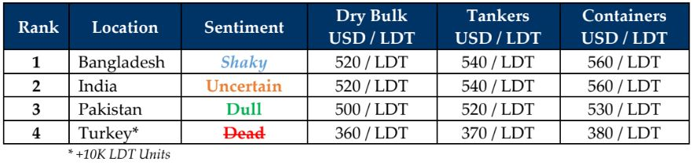

inWeekly Demolition Reports08/07/2024

It has been another tentative time in the global ship recycling markets as overall this week,SNP activity and local arrivals / deliveries reported minimal movements at the various waterfronts (Turkey’s permanent holiday notwithstanding), in addition to no market sales to report in the midst of Indian sub-continent ship recyclers decidedly approaching the monsoons with a ‘wait-&-watch’ the market mindset prior to committing afresh on tonnage, especially since virtually all sub-continent recyclers have taken in their respectable shares of tonnage over recent months.
Although this advertent pause may have inadvertently coincided with an overall firming of most recycling destination currencies, it has also come at a time when not only have steel plate prices finally started trading in Bangladesh, but steel levels in Bangladesh & India jointly declined through the week. Bangladeshi & Pakistani Budgets have also gone by, both of which delivered adverse impacts on vessel offerings, as well as negative sentiments at each location. India isn’t too far behind with mixed feelings about their own upcoming budget, after unexpected election results greatly affected local mindsets about the immediate economic future of the nation. As such, we can only hope that with the announcement of India’s budget, the most pronounced impact on these markets would finally conclude for 2024. Turkey remains dead at the scene of the crime for several quarters now, despite local vessel offerings that have made a remarkable leap earlier in the year.
At the Macro end of things, the supply of recycling tonnage remains distracted by impressive freight rates that have unfortunately galvanized by the incursions on merchant vessels in the Red Sea shipping lanes. And with the Israeli Defense Cabinet’s recent announcement of expanding incursions against Hezbollah in the North only last week, with retaliations expected from Hamas in the South, there are signs of hope in that, news of Hamas leaders considering a U.S. cease fire proposal along with a possible exchange of hostages has only come through as the week ended. Moreover, as older vessels enroute to disports and are due to get their SS / DDs by the end of June this year, could see a batch of fresh vessels to come within the end of July / early August.
Overall, as recycling prices cool off by about USD 20 – USD 25/LDT in the sub-continent markets, it is almost guaranteed to be an inadvertent period of relief for recyclers as tonnage shortage still maintains a militaristic hold on the availability of meaningful bulkers, tankers, and containers for the recycling markets to absorb and as such, a slumber-some monsoon might continue at the sub-continent recycling destinations as the world gradually starts to head off on summer holidays.
For week 27 of 2024, GMS demo rankings / pricing for the week are as below.

* +10K LDT Units Source: GMS, Inc.
Source: GMS,Inc.https://www.gmsinc.net/gms_new/index.php/web